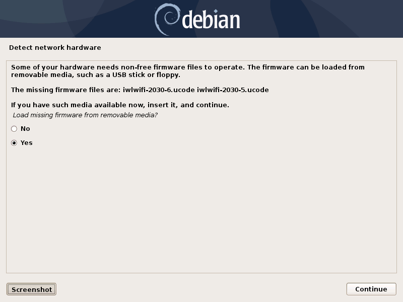

Debian base installation¶
Page content
Introduction¶
These are my notes about the installation of a Debian GNU/Linux system. A significant part of these notes describe the preparation of the installation medias. The assumption is made that you have access to a working machine with a Debian GNU/Linux system installed a fast enough internet connection (to download a few hundreds of megabytes). This machine will be used to prepare the installation medias for the new system.
Many software packages are also downloaded during the installation, so the target machine should also have a fast enough internet connection.
Getting an installation CD¶
See the Getting Debian page for information about how to download a Debian installer CD image or buy installation CDs.
If you have a fast enough internet connection and a CD burning drive, you can
download a small (approximately 300MB) installation image and burn it to a blank CD-R.
Commands like the ones below should do it. The example is for Debian 9.9.0
(Stretch). Note also that it is assumed that you have cdrskin installed. Run apt-get
install cdrskin as root if not. Note also that the
dev=<cd_burning_drive_device_file> option is probably not mandatory as cdrskin
can detect CD burning devices (cdrskin --devices lists the detected
devices):
wget https://cdimage.debian.org/debian-cd/current/amd64/iso-cd/debian-9.9.0-amd64-netinst.iso
cdrskin dev=<cd_burning_drive_device_file> -eject -v -data debian-9.9.0-amd64-netinst.iso
You might want to verify the authenticity of the ISO image. Follow the same procedure as for the firmware archive verification provided in the firmware archive section.
When the burning is done, you might also want to check the integrity of the burned CD. Just compare the output of the following command with the checksum from the downloaded checksum file:
dd if=/dev/<cd_burning_drive_device_file> bs=2048 \
count=$(($(stat -c %s debian-9.9.0-amd64-netinst.iso)/2048)) \
conv=notrunc,noerror | sha512sums
Preparing a media with firmware archive, just in case¶
Note that this step is not necessary if your installation CD already includes firmware (that is if you have downloaded the image from a subdirectory of cdimage.debian.org/cdimage/unofficial/non-free/cd-including-firmware).
The Debian Wiki provides some instructions, but here are the details of what I’ve done (for a Debian Buster install, and including the authenticity verification of the archive):
mkdir -p ~/download/debian_buster_firmware # Prepare a folder somewhere.
cd ~/download/debian_buster_firmware # Move to that folder.
# Download the firmware archive, its SHA512 checksum and associated signature
# file.
wget http://cdimage.debian.org/cdimage/unofficial/non-free/firmware/buster/current/firmware.tar.gz
wget http://cdimage.debian.org/cdimage/unofficial/non-free/firmware/buster/current/SHA512SUMS
wget http://cdimage.debian.org/cdimage/unofficial/non-free/firmware/buster/current/SHA512SUMS.sign
# Attempt to verify the authenticity of the file.
gpg --verify SHA512SUMS.sign
In the output of the last command, there were lines like:
It means I had never imported the key used to sign the firmware archive (and
this is confirmed by the fact that it does not appear in the output of gpg
--list-keys). I could import the key with:
gpg --keyserver keyring.debian.org --recv F41D30342F3546695F65C66942468F4009EA8AC3
A new attempt to check the signature with gpg --verify SHA512SUMS.sign now
produces a line like
The final steps consisted in extracting the files from the firmware archive
(tar xvzf firmware.tar.gz) and copy all the files with .deb extension
to a “firmware” directory located at the root of a USB stick.
During Debian installation, plug in this USB stick when (and if) you get this kind of screen:
Disk partitioning¶
At the disk partitioning stage, two non-trivial questions arise:
- Which partitioning scheme to choose (in particular on a machine with two hard drives (one SSD and one traditional spinning hard disk drive)? This link is helpful: https://unix.stackexchange.com/a/89230.
- What’s the right amount of swap space? This article by Abhishek Prakash helps: https://itsfoss.com/swap-size.
I settled on the following partitioning schemes:
| Machine with spinning HDD only | Machine with 128GB SDD + spinning HDD |
|---|---|
Single / partition + swap |
|
Postponing the installation of a graphical environment¶
During Debian installation, you arrive at this screen.

Checking none of the desktop environment results obviously in no desktop environment installed. But it is possible to install one (including one that was not proposed by the Debian installer) later.
Shutting down and rebooting a Debian system¶
After the installation, you should be able to boot into the newly installed system and log in as root or normal user. But it may not be obvious how to shutdown or reboot the system:
systemctl poweroff # Shut down.
systemctl reboot # Reboot.
Immediate post-install actions¶
This section describes what I usually do after booting into the newly installed Debian system.
System update¶
Update the system as root with:
apt-get update # As root
apt-get dist-upgrade # As root
Adding deb-multimedia to the sources¶
You may want to add deb-multimedia as a source of packages for the newly installed Debian system (see this linuxconfig.org article).
http://deb-multimedia.org provides some instructions:
First, add as root a line like this one (example for Debian Buster) in your
/etc/apt/sources.list:
Then, issue as root the following commands:
apt-get update -oAcquire::AllowInsecureRepositories=true
apt-get install deb-multimedia-keyring
apt-get update
apt-get dist-upgrade
Checking the configured time zone¶
Check the configured time zone with:
cat /etc/timezone
If the configuration is not correct, you can change it as root with:
dpkg-reconfigure tzdata # As root
Synchronizing the system date with network time servers¶
Just install the ntp package:
apt-get install ntp # As root
See the Debian Wiki NTP page for more details.
Installing a console locker¶
There are many screen and/or console locker programs. I’ve installed physlock:
apt-get install physlock # As root
Installing a memory (RAM) tester¶
RAM failures are not so rare in my experience. A tester like Memtest86+ can really help diagnosing a RAM failure. The
apt-get install command below installs Memtest86+ and adds an entry in the
Grub menu (you have to reboot your
machine and select the Memtest86+ grub entry to start Memtest86+):
apt-get install memtest86+ # As root
Installing a wireless devices status management tool¶
On a laptop computer, it may be useful to check the status (enabled, hard blocked, soft blocked) of the wireless devices. The rfkill package makes that possible:
apt-get install rfkill # As root
Check the statuses with:
/usr/sbin/rfkill list
Installing a CD burning tool¶
I use cdrskin to burn CDs (in particular the Debian installation CDs) on an internal or external (USB) CD burning drive:
apt-get install cdrskin
Post-install maintenance¶
I regularly run the following commands to keep the system up to date:
apt-get update & apt-get dist-upgrade
apt-get autoremove # Useful if some packages have become unneeded.
apt-get autoclean # Useful to avoid that the APT cache grows out of control.